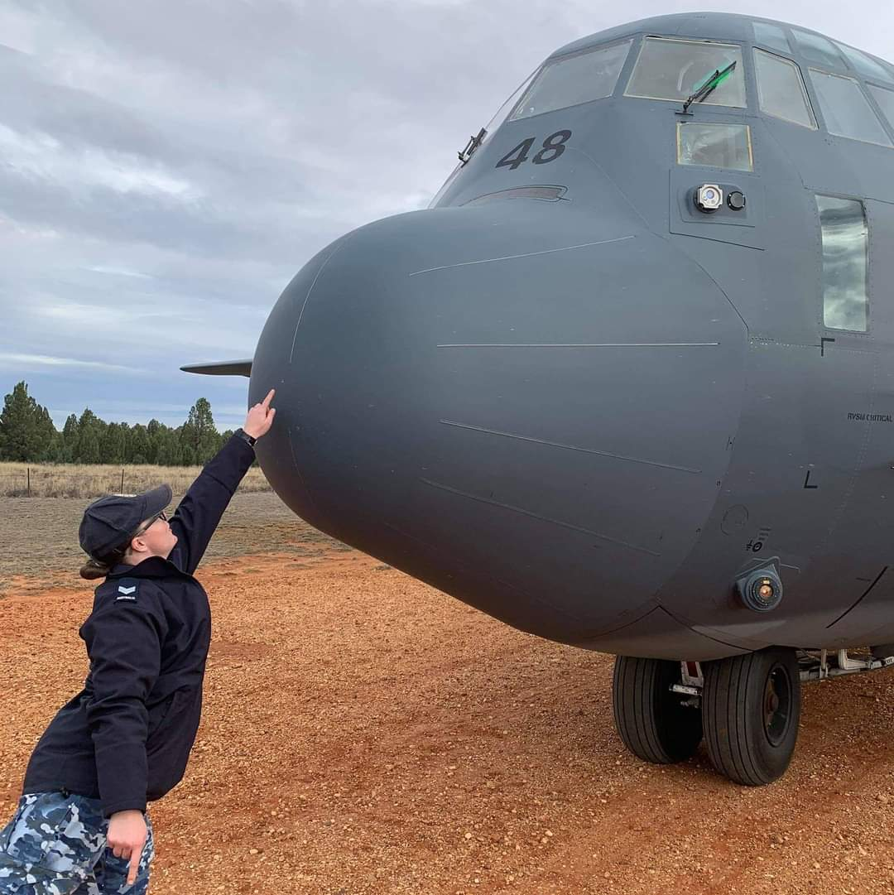

When I grow up, I want to be a Dinosaur
Currently Resides: Canberra, ACT.
Education to date: Certificate IV in Training and Assessing.
Family Make-up: Engaged, two sons to a previous marriage, four step-daughters.
Pets: Two dogs, Jake and Marcy and two rats, Kim and Prue.
Love: Dinosaurs.
After leaving school three days before my Year 12 English exam, I enlisted in the Australian Regular Army as an Avionics Technician. I was a baby-faced 17-year-old with a chip on my shoulder and the world at my feet. Unfortunately, I developed an unknown medical illness and voluntarily discharged shortly after enlistment.
Despite not having any qualifications or formal education, I was quickly offered a position with Telstra as a Corporate Consultant to Centrelink. While it was an eye-opening experience, I longed for the rigidity and mateship that Defence offered. So, I gathered up my pride and requested to enlist into the Royal Australian Air Force. After some toing and froing my application was successful and I joined the service in 2007. Since then, I have had the pleasure of travelling to every state in Australia, meeting some incredible people and being a part of some breathtaking and historic moments.

There is an understanding that Military Members are the community’s exemplar. It is expected that we are physically and emotionally fit, well trained and somewhat hardened, ready to deploy at a moment’s notice. We hold ourselves to a high standard and expect nothing less from our peers. Unfortunately for me, this all changed when my unknown illness resurfaced in 2012, two years after my youngest son was born. After undergoing a series of invasive tests I was diagnosed with an inflammatory bowel disease called Ulcerative Colitis.
Over the next five years I battled the disease while serving and being a mother. I was in-and-out of hospital and took all manner of medications to keep me upright. Despite this, nothing worked. My colon stopped working and my kidneys and liver started to fail. I became so unwell that Specialists advised without removing my colon, I had six weeks to live. One fateful afternoon in 2017, after spending almost six months in hospital hooked to tubes and wires, my colon was removed and I was presented with a permanent ileostomy.
I initially considered surrendering my position in the Air Force. After all, there are not too many Military members who sport a fancy ostomy bag.
It didn’t even match my shoes. However, I proved that I was not the sum of my parts (or lack thereof) and Defence agreed to keep me on as a permanent member.
Four years later I am still serving. My ileostomy has not defined me as an aviator, as a mother or as a person. I am proud of my contributions to Australia, my dedication to my family and of my strength and determination.
When I grow up, I want to be a Dinosaur